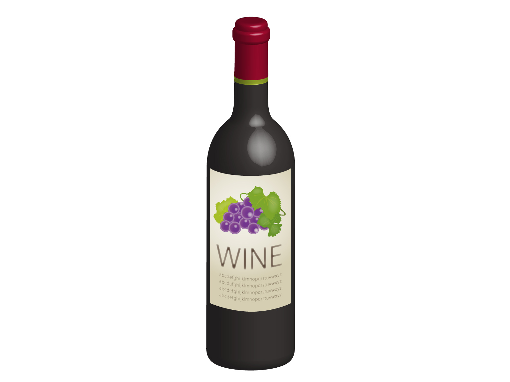

木下インターナショナル 

木下インターナショナルはジャック・セロスを始めとするシャンパーニュ、ブルゴーニュ、ロワール、日本のワイン、またヴィラマリアに代表されるニューワールドなど、マーケットでよく知られたメジャーな商品を数多く販売しています。
しかし、その一方で、例えばマデイラワインやポルトガルワインなど、まだまだ認知度には欠けるけれども、自分たちが飲んでこれは本当においしいと思える商品を大きく育て上げることにも挑戦を続けています。